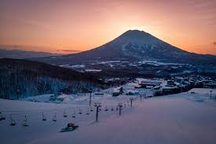
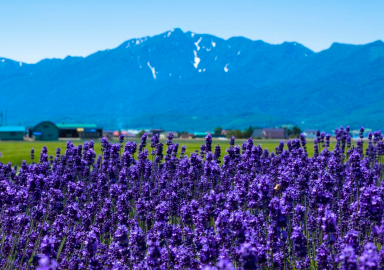
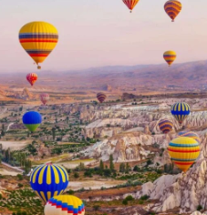

Hokkaido is located on the northernmost end of Japan, and is the second largest island of the country.
Hokkaido is most famous, among foreign travelers, for the ski fields of Niseko. Other attractions, experiences and products people might know include the Hakodate night view, Asahiyama Zoo,
lavender fields of Furano, Sapporo Beer and the culture of the indigenous Ainu people.
It offers the draw of adventure travel with spectacular seasonal views set against the backdrop of its majestic natural environment, including outdoor activities such as skiing and trekking, unique culture such as the tradition of the indigenous Ainu people and the Jomon culture, myriad gourmet options, and hot springs.
Hokkaido attracts many visitors not only from Japan, but also from abroad.

Niseko (ニセコ) is the most famous ski resort in Japan, known for having tons of light powder snow, spectacular backcountry and a large number of foreigners - especially Australians - who in recent decades have been responsible for
popularizing the resort area with the skiing and snowboarding community outside of Japan. As a result, Niseko's resorts are very accessible and welcoming to foreign visitors, which they keep busy with plenty of vast, long ski runs, endless powder, and a growing number of after-ski activities.
In addition to kilometers of ski trails, many of Niseko's resorts offer winter adventure seekers the option to explore off trail skiing, a relatively uncommon attraction at most other ski resorts in Japan. The backcountry can be accessed through special gates around the resorts or experienced
on guided tours and helicopter tours. The latter is also possible on nearby Mount Yotei, a nearly perfect volcanic cone, which can be seen from Niseko.

Furano is a large expanse of rolling hills that lead up to Mt. Tokachi. Situated along the Sorachi River, Furano belongs to Furano-Ashibetsu Nature Park. Because of its position in the heart of Hokkaido , Furano is nicknamed the "navel town." There's even a festival to celebrate it.
In winter, Furano is prime downhill and cross-country skiing territory with world-class slopes. Warmer weather is perfect for river rafting, trekking, cycling, golf and other pursuits.
2. South Korea-Jeju Island

- Jeju Island, island and (since 2006) special autonomous province of South Korea. The province, the smallest of the republic, is in the East China Sea 60 miles (100 km) southwest of South Jeolla province, of which it once was a part. The provincial capital is the city of Jeju.
- Oval in shape, Jeju Island measures 40 miles (64 km) from east to west and 16 miles (26 km) from north to south. The island is composed of a core of volcanic material that rises symmetrically to the crest of Mount Halla (6,398 feet [1,950 meters]), which has a lake in its crater. The mountain and its surrounding area are a national park!. Hundreds of crater-formed hills
from which volcanic material once flowed, seaside precipices with waterfalls, and lava tunnels (or tubes) are international sightseeing attractions. The island’s lava tubes and certain other volcanic formations (including Mount Halla) were collectively designated a UNESCO World Heritage site in 2007. Jeju is bathed in warm currents, and its oceanic climate supports some subtropical plants.
- Best Things to See and Do in Jeju
- Step into a whole new world at , Arte Museumone of Jeju’s coolest must-dos. As Korea’s largest media art museum, visitors can get ready for an immersive experience like no other. Lose yourself in the many colourful media art exhibitions and digital installations, all bound together by the theme ‘Eternal Nature: Nature beyond Time and Space’.
3. Turkey-Istanbul

- Istanbul is one of the most unique cities we’ve ever traveled to, full of history, amazing food, and gorgeous architecture. But to be honest, I had no idea what to expect before visiting. You might have that same feeling!
- Istanbul, largest city and principal seaport of Turkey. It was the capital of both the Byzantine Empire and the Ottoman Empire.
Winter in Istanbul?
- January is the coldest month with daily average highs of just 8.6oC.
- February
Winter brings cooler weather to the city, with average highs dropping below 10oC in January and February.
- December is warmer, with average temperatures of 10.8o C , but sees the highest levels of rainfall, with an average of 85mm.